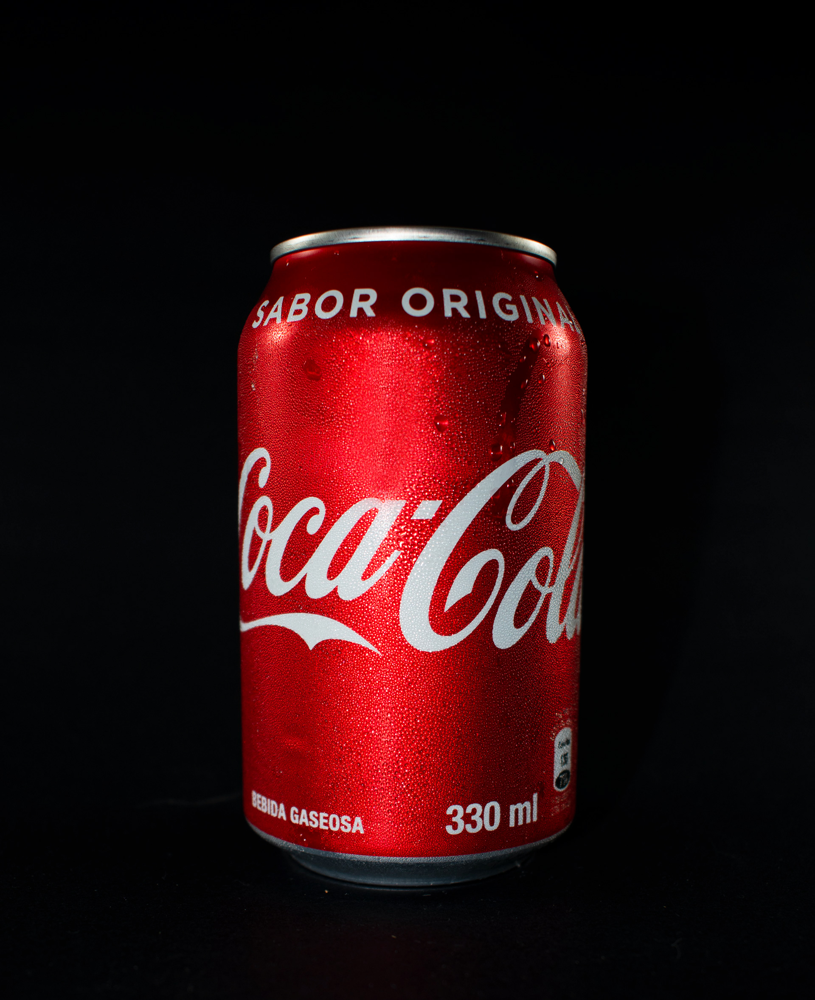
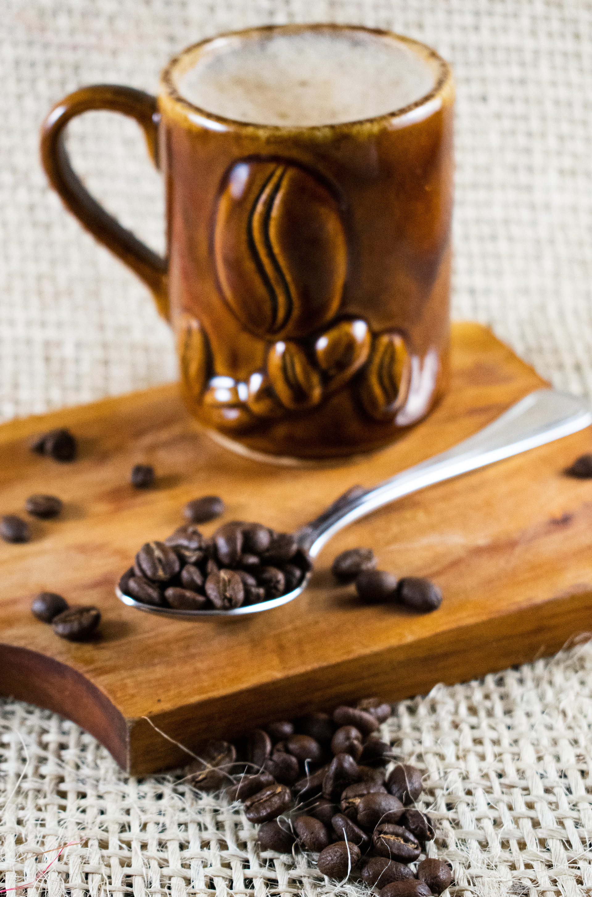

Personal Project · Photography
Product photography built around one principle: let the object do the talking. These shots were taken with controlled studio lighting, minimal props, and deliberate composition — the kind of images brands use to make people stop scrolling.
Each setup was planned from scratch — choosing backgrounds, light direction, and depth of field to bring out the product's best qualities. Post-processing in Lightroom and Photoshop refined the final look without losing the naturalness of the shot.
Selected shots
